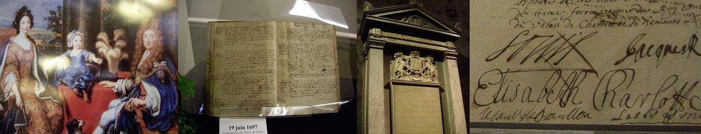

1° The exile King James II - Le roi Jacques II en exil (1688)

|
OVER THE SEAS AND FAR AWA ("Jacobite Relics" I, N° 32)
1. Come, all fast friends, let's jointly pray And pledge our vows on this great day; And of no man we'll stand in awe. But drink his health that's far awa. He's o'er the seas and far awa, He's o'er the seas and far awa, Yet of no man we'll stand in awe, But drink his health that's far awa. 2. Though he was banish'd from his throne By parasites who now are gone To view the shades which are below, We'll drink his health that's far awa. He's o'er the seas and far awa... 3. Ye Presbiterians, where ye lie, Go home and keep your sheep and kye; For it were fitting for you a' To drink his health that's far awa. He's o'er the seas and far awa... 4. But I hope he shortly will be home, And in good time will mount the throne; And then we'll curse and bann the law(4) That keepit our king (1) sae lang awa. He's o'er the seas and far awa... 5. Disloyal Whigs, depatch, and go To visit Noll (2) and Will (3) below; 'Tis fit you at their coal should blaw, Whilst we drink their health that's far awa. He's o'er the seas and far awa... |
MEME S'IL EST AU-DELA DES OCEANS ("Jacobite Relics" I, N°32)
1. Mes amis, venez tous prier avec moi, Engager solennellement votre foi. Nul ne saurait nous faire commandement De ne point boire à notre cher absent. Même s'il est au-delà des océans, Loin de nous et par-delà les océans, Qui donc pourrait nous faire commandement De ne point boire à notre grand absent. 2. Bien que de son trône il ait été chassé Par des parasites qui s'en sont allés En enfer rejoindre d'autres mécréants, Buvons à la santé du cher absent. Même s'il est au-delà des océans... 3. Vous les Presbytériens, où que vous soyez, Vos brebis, vos vaches, rentrez les garder; Vous voir boire, ah que cela serait plaisant, A la santé du cher, du grand absent!. Même s'il est au-delà des océans... 4. Mais j'espère que bientôt viendra le temps, De le voir sur le trône, tout comme avant; Nous abolirons alors le règlement(4) Qui bannit le Roi (1) depuis si longtemps. Même s'il est au-delà des océans... 5. Hypocrites Whigs, pliez donc vos affaires Car Noll (2) et Will (3) vous attendent en enfer; C'est à vous d'attiser leurs charbons ardents, Tandis que nous buvons au cher absent. Même s'il est au-delà des océans... Traduction Christian Souchon (c) 2005 |

Jacques II, Marie de Modène et Louise-Marie Stuart à Saint-Germain.
Confirmation du Prince de Galles, futur Jacques III, le 16.06.1697.
Tombeau de Jacques II à l'Eglise Saint-Germain (offert par la Reine Victoria).
Acte de baptême de Louise-Marie (1692-1712): signatures du parrain, Louis XIV,
de la marraine, la Princesse Palatine et des parents. (Cf. aussi: Three Healths ).
|
(1) James II who died in 1701, or his son, James VIII/III, for the Jacobites.
(2) N Oll = Ol iver Cromwell (3) William of Orange (4) The Claim of Right |
(1) Jacques II qui mourut en 1701, ou son fils, Jacques VIII/III pour les Jacobites.
(2) N oll = Ol iver Cromwell (3) Guillaume d'Orange (4) La "Déclaration des Droits" de 1689 |